Use case, entity relationship, context and architecture diagrams plus page wireframes
for the AgriMart agricultural supply store. Every figure is also available as an
editable SVG and a 2× PNG for embedding in the project documentation.
Web Systems and Technologies 2 · System Integration and Architecture 1 · Print to PDF for the submission pack.
1. Use Case Diagram
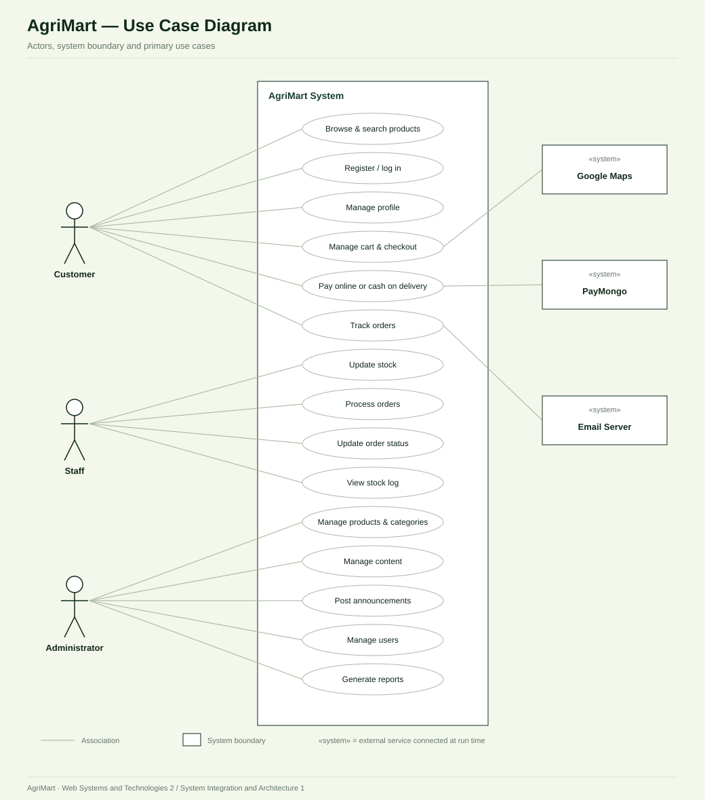
Primary actors (customer, staff, administrator) and secondary actors (PayMongo, Email Server, Google Maps) with their use cases.
2. Entity Relationship Diagram
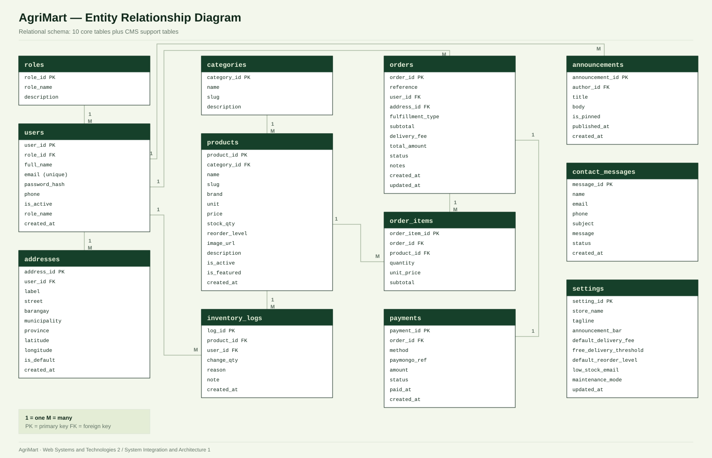
Core tables (roles, users, addresses, categories, products, orders, order_items, payments, inventory_logs) with CMS support tables and 1:M relationships.
3. Context Diagram
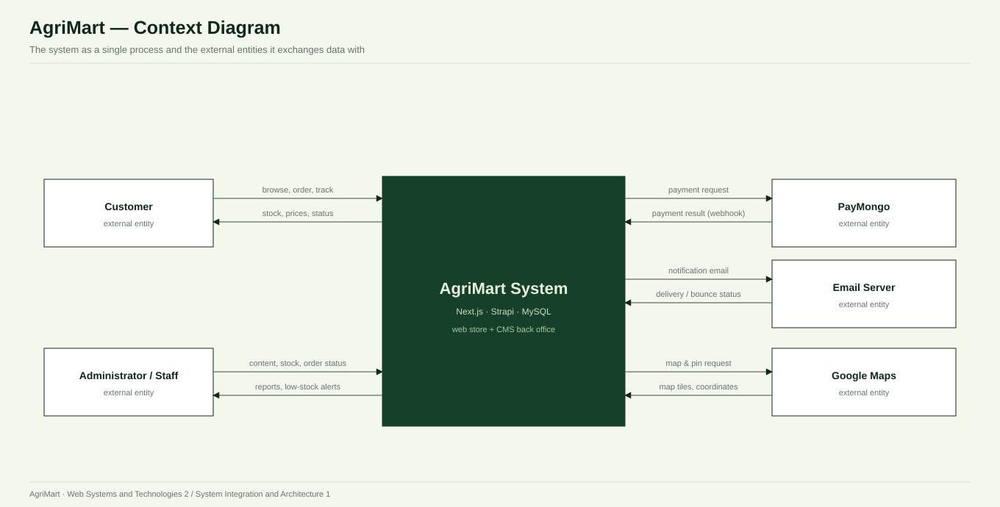
The system as a single process with the data it exchanges with customers, back-office staff and third-party services.
4. System Architecture
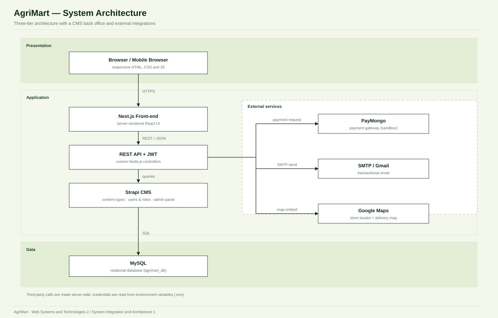
Three-tier architecture: browser → Next.js front end → REST API + JWT → Strapi CMS → MySQL, with PayMongo, SMTP and Google Maps integrations.
5. Wireframes
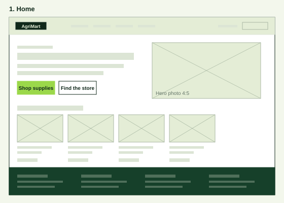
1. Home
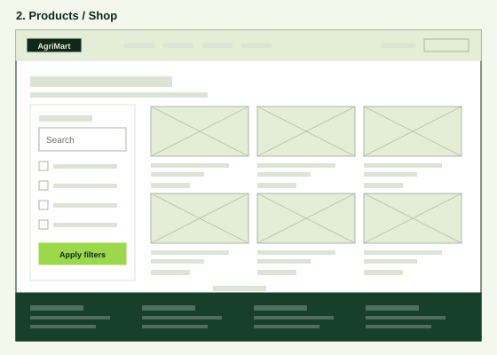
2. Products / shop
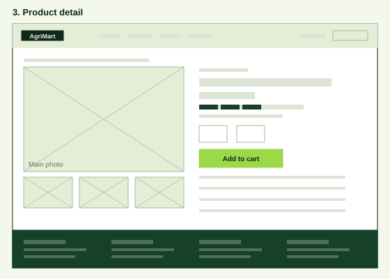
3. Product detail
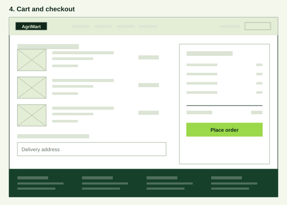
4. Cart and checkout
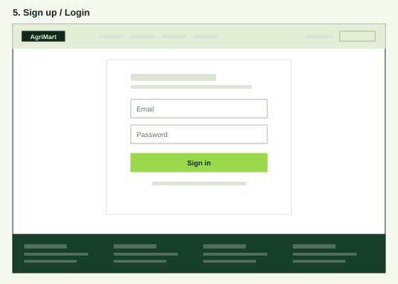
5. Sign up / log in
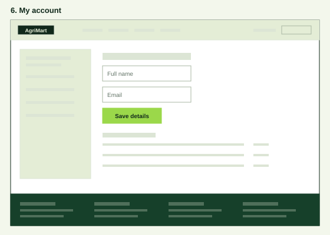
6. My account
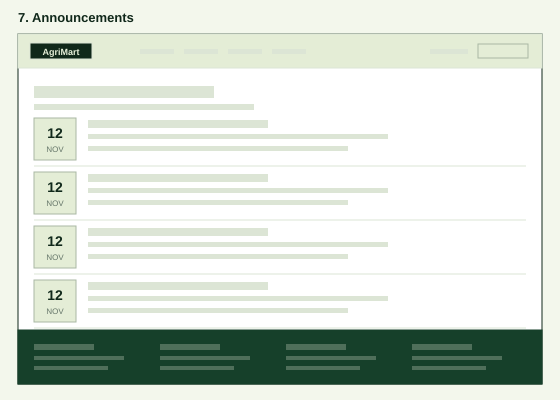
7. Announcements
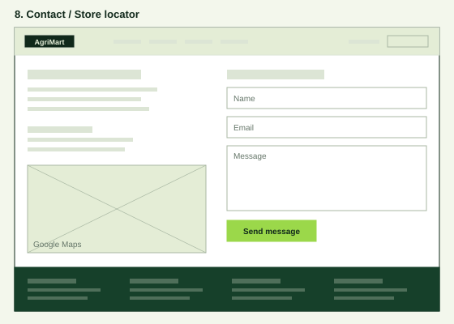
8. Contact / store locator
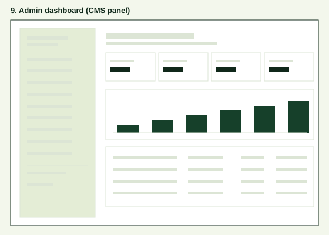
9. Admin dashboard (CMS panel)
Source and exports
SVGs live in docs/ and docs/wireframes/; 2× PNGs are in docs/png/.
Rebuild with node docs/generate-uml.mjs, node docs/generate-wireframes.mjs
and node docs/export-png.mjs. See docs/README.md for details.